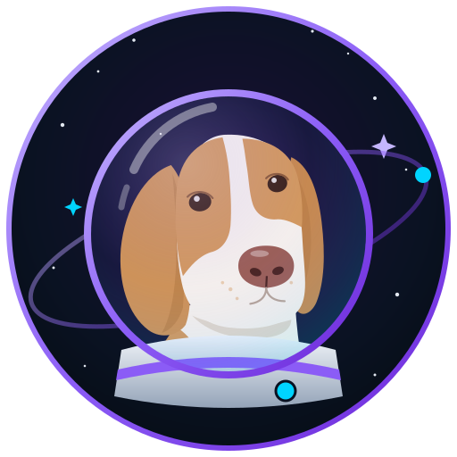

Una pregunta que no supe contestar rápido
Si tu plataforma
necesita un experto,
no tenés una
plataforma.
Tenés un experto. Y los expertos no escalan.
Claude Code19 componentescastellano + inglésApache-2.0

Juan Carlos Romero Fulfarodesliza →